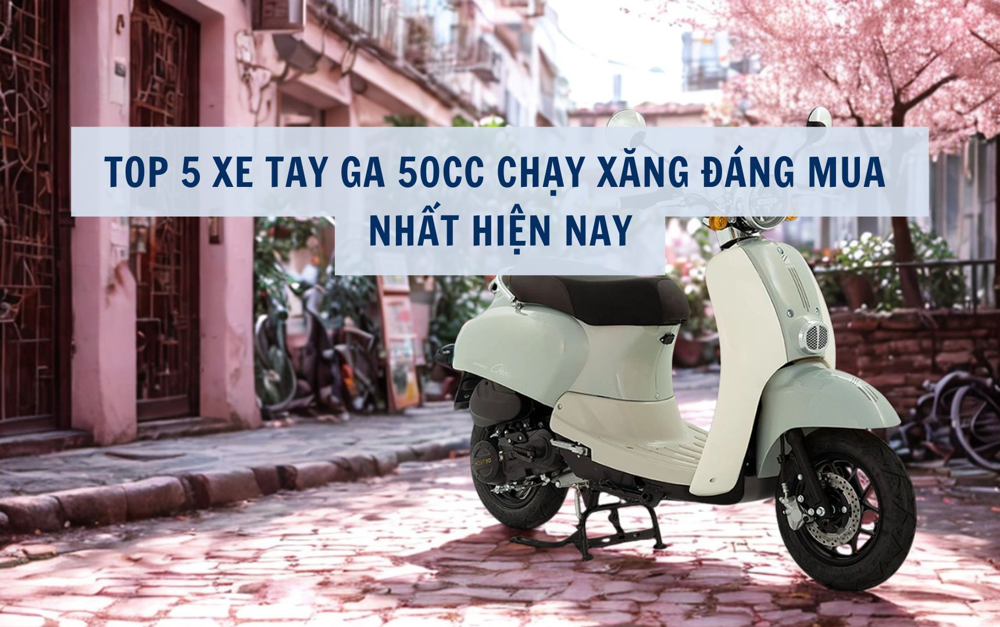

Không cần bằng lái, thiết kế sành điệu như các dòng xe phân khối lớn và khả năng tiết kiệm nhiên liệu vượt trội – xe tay ga 50cc đang trở thành tâm điểm mua sắm đầu năm 2026. Nếu bạn đang tìm kiếm một phương tiện di chuyển linh hoạt cho con em đi học hay đơn giản là dạo phố, đừng bỏ lỡ danh sách 5 cái tên "làm mưa làm gió" dưới đây.

Mặc dù xe điện đang phát triển mạnh, nhưng xe ga 50cc chạy xăng vẫn giữ vững vị thế nhờ sự tiện lợi: đổ xăng là đi, không phải lo chờ đợi sạc pin hàng giờ liền hay sợ hỏng bình ắc quy khi để lâu không đi. Dưới đây là top 5 sự lựa chọn hàng đầu:
1. Xe Ga 50cc Vespa (Nhiều hãng sản xuất)
Đứng đầu danh sách luôn là thiết kế kinh điển mang phong cách Châu Âu. Xe tay ga Vespa 50cc thu hút phái nữ bởi những đường cong mềm mại, tôn dáng người lái. Xe thường được trang bị cốp rộng, viền mạ crom sáng bóng và hệ thống động cơ vận hành cực kỳ êm ái.
2. Xe Ga 50cc Crea
Khác với vẻ sang chảnh của Vespa, Crea 50cc mang một phong cách cổ điển, pha chút tinh nghịch. Điểm nổi bật của Crea là cụm đèn pha nhô ra phía trước cùng yếm xe vát chéo độc đáo. Động cơ Crea nổi tiếng với khả năng tiết kiệm nhiên liệu, tiêu thụ chỉ khoảng 1.8 lít/100km.
3. Xe Ga 50cc Giorno
Nhỏ gọn, tròn trịa và vô cùng đáng yêu là những từ dùng để miêu tả Giorno 50cc. Với trọng lượng chưa đến 80kg, đây là mẫu xe hoàn hảo cho các bạn nữ sinh có thân hình nhỏ nhắn. Xe luồn lách cực tốt trong những con hẻm nhỏ hoặc những tuyến phố kẹt xe.
4. Xe Ga 50cc Kymco Like
Đại diện đến từ thương hiệu Đài Loan Kymco luôn được đánh giá cao về độ bền của động cơ. Kymco Like 50cc sở hữu thiết kế chắc chắn, đèn hậu Full LED và nắp bình xăng đặt ngay phía trước tiện lợi (không cần phải xuống xe mở cốp khi đổ xăng).
5. Xe Ga 50cc SYM Elite
Cuối cùng là một cái tên vô cùng quen thuộc: SYM Elite 50cc. Sự phối màu cá tính, thiết kế lai giữa hiện đại và cổ điển giúp Elite luôn cháy hàng. Đặc biệt, ổ khóa tích hợp 4 chức năng: công tắc, khóa cổ, khóa từ chống trộm và khóa mở cốp xe rất tiện dụng.